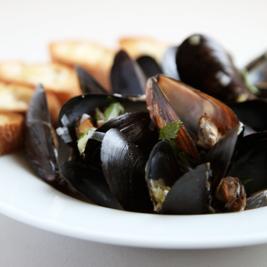

Moules a la Mariniere

Description
Fresh Mussels Steamed Open in Wine and Flavourings
Here is the simplest version of this most typical of French methods for cooking mussels. They are steamed open in a big pot with wine and flavourings, which
takes only about 5 minutes. Then the mussles, shells and all, are ladled out into soup plates, and the cooking liquor is poured over them. Each guest
removes the mussels one by one from their shells with fingers or a fork and discards the shells into a side dish. In addition to shell dish and fork, provide
your guests with a soup spoon for drinking up the mussel juices, a big napkin, and a finger bowl. Together with the mussels serve French bread, butter, and
a chilled, light, dry white wine such as Muscadet, dry Graves, or one of the Pouillys.
For 6 to 8 people
Ingredients
- 3/4 pt. of lightm dry white wine or 1/2 pt. dry white vermouth
- 8 tbl chopped shallots, or spring onions, or very finely chopped onions
- 8 parsley sprigs
- 1/2 bay leaf
- 1/4 tsp thyme
- 1/8 tsp pepper
- 3 oz. butter
- 5 qts. scrubbed, soaked mussels
Steps
- Bring the wine to the boil in the pan with the rest of the ingredients listed. Boil for 2 to 3 minutes to evaporate its alcohol and to reduce its
volume slightly.
- Add the mussels to the pan. Cover tightly and boil quickly over high heat. Frequently grasp the pan with both hands, your thumbs clamped to the cover,
and toss the mussels in the pan with an up and down slightly jerky motion so that the mussels will change levels and cook evenly. In about 5 minutes the
shells will swing open and the mussels are done.
- With a big spoon, dip the mussels into wide soup plates. Allow the cooking liquid to settle for a moment so that any sand will sink to the bottom.
Then ladle the liquid over the mussels, sprinkle with parsley and serve immediately.